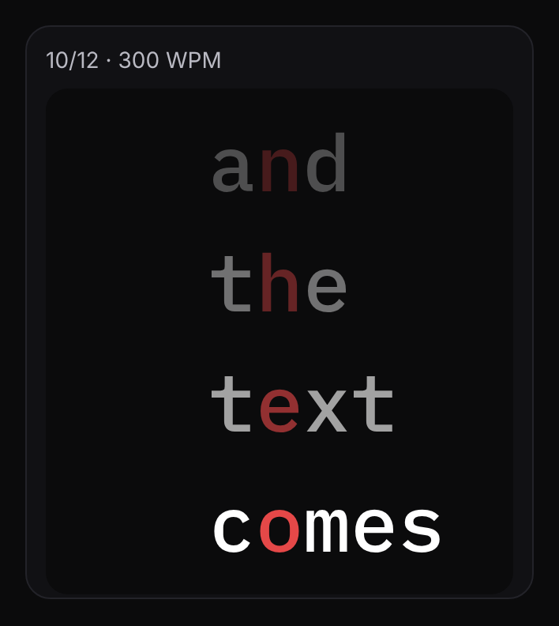

An RSVP reader app for iPhone: read one word at a time
WordBlip is an RSVP reader for iPhone. RSVP stands for rapid serial visual presentation: instead of a page full of lines, you see one word at a time in the same spot on the screen, at a pace you set in words per minute (WPM). Your eyes stay in one place and the text comes to you.

How RSVP reading works in WordBlip
A short demo that shows the sentence “Your eyes stay in one place and the text comes to you.” one word at a time.
One word, one spot. Each word lines up on a red focus letter, so the point your eyes rest on stays put from word to word. In Settings you can pick another highlight color, and choose whether the focus letter is placed automatically or at a fixed position in the word.
A pace you choose. Set your WPM with the slider or the −25 and +25 buttons. Start, stop or reset whenever you like. If you lose the thread, tap a word in the text below the reader to jump back to it.
Your own text. Paste an article, a newsletter, an email or your notes into the reader and press Start. Pasting text is free.
A display that suits you. Change the word size, and turn on a short countdown before each run if you like a moment to settle in.

More than a reader: short training with a comprehension check
Reading one word at a time is a skill you get used to, so WordBlip also has a Training tab. You set a comfortable baseline pace once. Each session then has three short parts:
- A warm-up passage, a little below your baseline.
- A main passage at your training pace.
- One or two questions about what you just read.
Your next main run follows your last score: one step up when you answered everything correctly, one step down when you didn't. The point is to stay at a pace where the text still makes sense to you, not to chase a number. The Progress tab shows your recent sessions and your WPM over time.
Want a routine around this? See a daily reading focus practice.

When an RSVP reader is a good fit, and when it isn't
RSVP works best for text you read from start to finish: articles, essays, newsletters, stories and long emails. It suits moments when a full page feels busy, or when you want one thing on the screen and nothing else.
It's a poor fit for tables, code, formulas, or dense passages where you need to glance back at the previous paragraph. For those, read the page normally. In WordBlip you can pause at any point, read the text below the reader, and pick up again from any word.
What's free and what's Pro
Free
- Paste your own text and read it one word at a time, up to 350 WPM.
- Easy training sessions with comprehension questions, up to 350 WPM.
- Your recent progress.
Pro
- Import EPUB and TXT files and keep them in your Library (see reading EPUB books one word at a time).
- Medium and Hard training, and paces above 350 WPM.
- Your full progress history.
WordBlip shows the Pro screen on its own once, after your first training session. Close it and the free features keep working. After that, it only appears when you tap something that's part of Pro.
Get WordBlip on the App Store
FAQ
What does RSVP stand for?
Rapid serial visual presentation. Words are shown one after another in the same place on the screen, instead of laid out in lines.
Is WordBlip a free RSVP reader?
Yes, you can start free. Pasting your own text, reading up to 350 WPM and Easy training are free. Importing books and the higher levels are part of Pro.
Why is one letter red?
It's the focus letter. Each word is positioned so this letter sits in the same place every time, which gives your eyes one point to rest on. You can change its color in Settings.
Can I read my own books?
Yes, with Pro. WordBlip imports EPUB and TXT files into a Library and remembers your chapter and word. More on the EPUB page.
Do I need an account?
No. There's no sign-up; you open the app and start reading.
Does it work on iPad or Android?
WordBlip is an iPhone app that also runs on iPad. There is no Android version.
Will RSVP change how I read?
We don't promise any particular result. WordBlip gives you a calm way to read one word at a time and a short daily session that checks what you understood. How you use it is up to you.